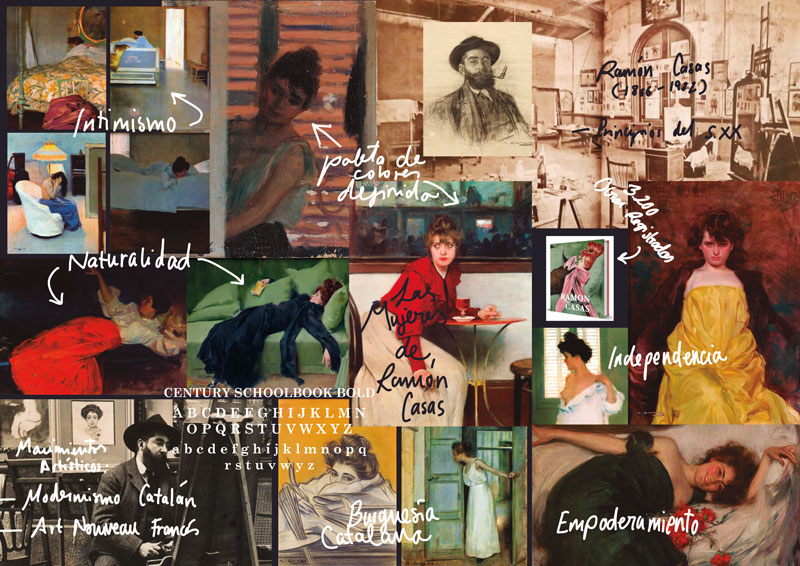
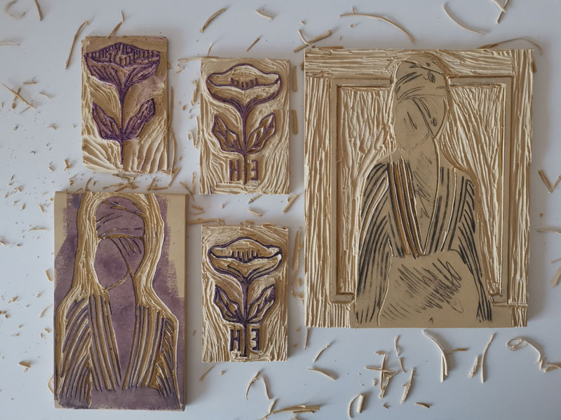
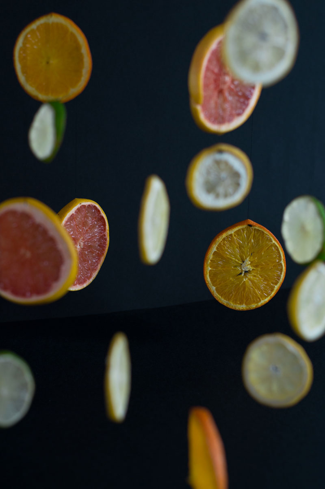
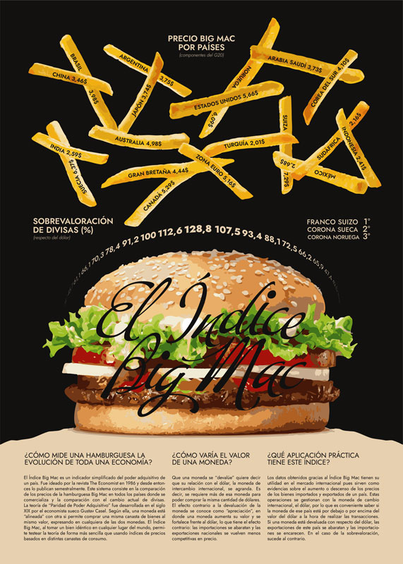
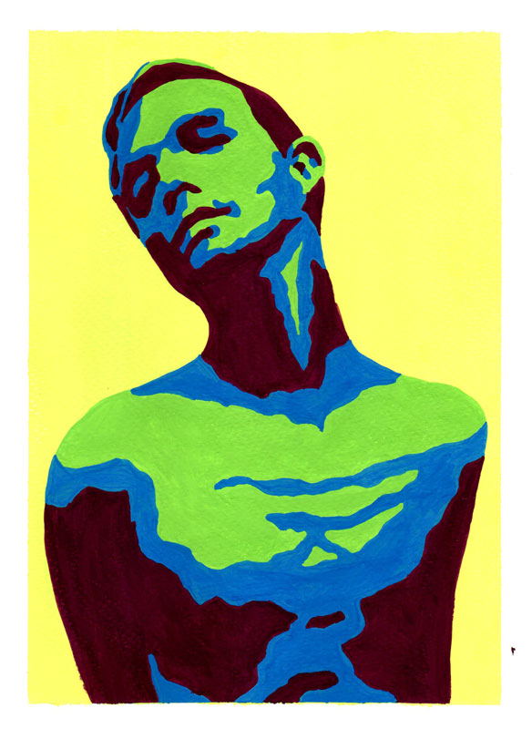
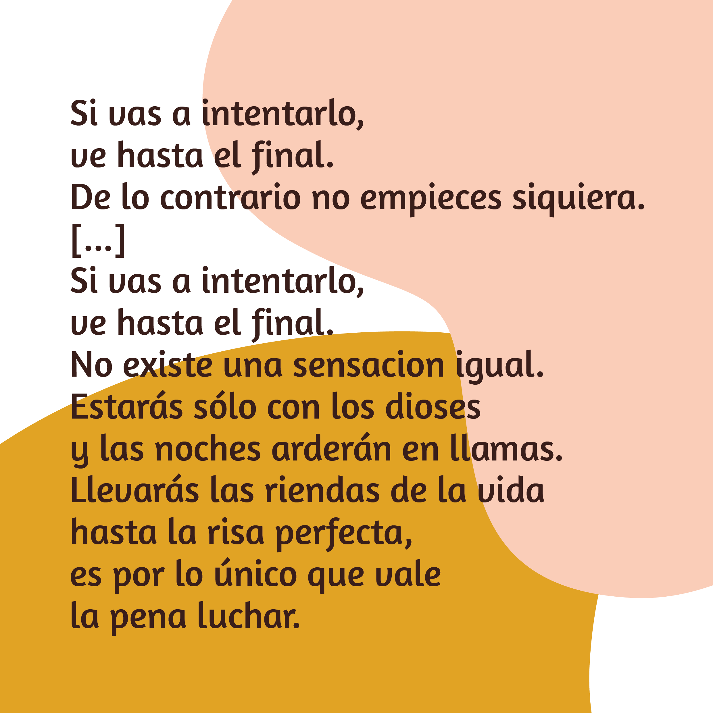
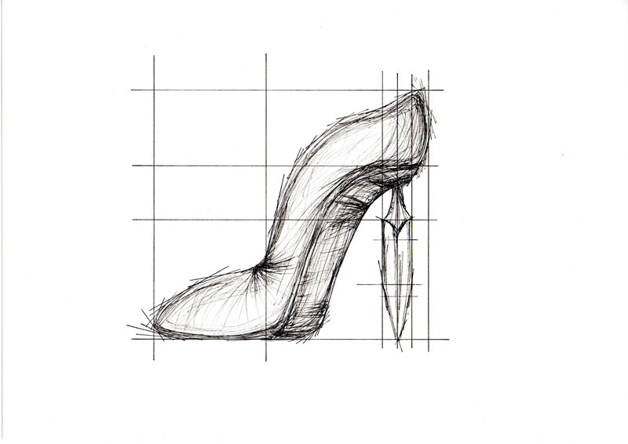
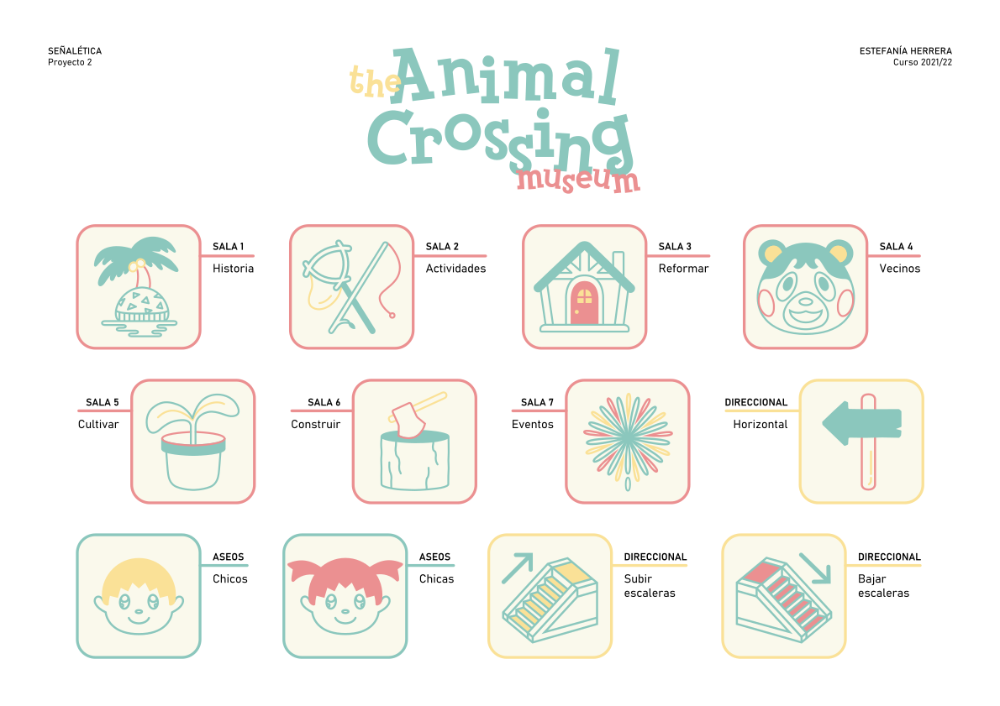

Mi galería de imágenes
Estefanía Herrera Cruz
Moodboard
Este moodboard es parte de un proyecto para la asignatura de Historia del primer curso. En él agrupé parte de la obra del artista catalán Ramón Casas, destacando la figura de la mujer en su proceso artístico y remarcando sus características.
Gif animado

Este gif lo realicé para la asignatura optativa de Taller de Técnicas de Animación. Para realizarlo seguimos la técnica de la rotoscopia, en la cual se copia cuadro a cuadro los fotogramas de un video, en este caso propio.
Carvado de sellos
El carvado de sellos es una de las técnicas que se exploran en la asignatura de Taller de Reproducción e Impresión. Debíamos crear dos sellos diferentes, uno con nuestras iniciales que funcionase como ex-libris y otro para ilustrar la portada de un cuaderno. En la imagen se muestra el proceso de tallado.
Bodegón fotográfico
Esta fotografía es parte de un proyecto personal con el que pretendía realizar una versión propia del bodegón de frutas.
Infografía
Proyecto para la asignatura de Diseño de la Información. En este caso, la intención era la de explicar la fluctuación del valor de las diferentes monedas mediante el Índice Big Mac. Este índice compara el valor de las hamburguesas en diferentes partes del mundo.
Dibujo gouache
Dibujo a color realizado mediante la técnica de la división en planos de profundidad. Basado en la fotografía del escritor Truman Capote realizada por Richard Avedon en 1955.
Inspiración
Esta frase me acompaña en mi etapa de estudiante. Me gusta volver a ella cuando me siento derrotada o cuando veo que no estoy consiguiendo mis propósitos. Volver a leerla me da fuerzas y me inspira. El autor es Charles Bukoswki.
Dibujo tinta
Dibujo de objetos imposibles mediante la suma de objetos. En este caso es la unión de un tacón y un puñal. La técnica empleada es de sketch o dibujo lineal.
Pictogramas
Proyecto para la asigntatura de Diseño de la Información. Se debía crear la señalética de un museo sobre el videojuego Animal Crossing. En la imagen se muestra la relación de pictogramas de sala obtenidos.